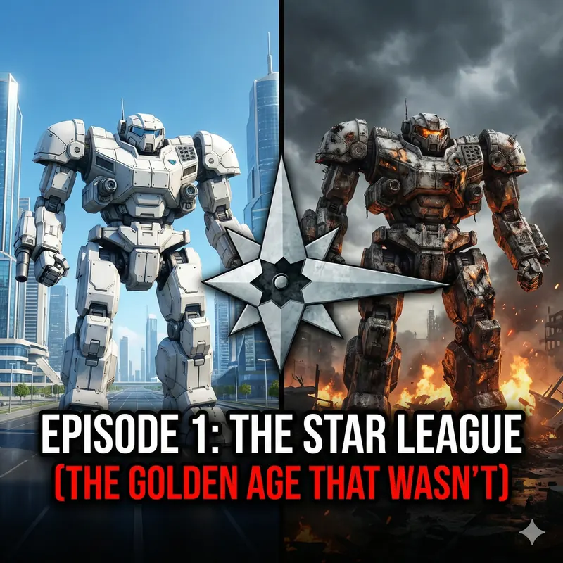

The Star League: The Golden Age That Wasn't
Every faction in BattleTech claims to be the Star League's true successor. Understanding why requires understanding what the Star League actually was — and what it actually did. The answer is more complicated, and more interesting, than "golden age of peace and prosperity."
Before the Star League: The Age of War (2005–2570)
Humanity reached the stars through the Kearny-Fuchida hyperdrive, discovered in 2108 by Professors Thomas Kearny and Takayoshi Fuchida. Their breakthrough made interstellar travel possible. Within sixty years, more than 100 human-colonised worlds were scattered across a sphere 80 light-years in diameter. Within 125 years, there were more than 600. As colonies grew into nations, those nations began fighting. The Age of War was centuries of conflict between increasingly powerful star-spanning states, fought with weapons that grew more destructive with each generation.
The Terran Hegemony — the political entity that would eventually create the Star League — was itself born from a coup. In 2313, Fleet Admiral James McKenna, commander of the Western Alliance's space navy, took matters into his own hands. He destroyed political parties, dissolved the Alliance government, bombarded cities that resisted, and executed holdouts. His *Hegemony Charter* created a new order: Planetary Governors appointed in the Hegemony's name, a virtual nobility built into the fine print, and himself as the first Director-General and Lord Protector. He was elected to this position in February 2316, having already made refusal inadvisable. McKenna was tall, imposing, genuinely brilliant, and capable of enormous brutality — not a contradiction but a combination, the type that tends to found things.
Around the Hegemony, five Great Houses had coalesced from the earlier age of colonisation, each controlling vast reaches of space: Davion in the Federated Suns, Steiner in the Lyran Commonwealth, Kurita in the Draconis Combine, Marik in the Free Worlds League, and Liao in the Capellan Confederation. Dozens of smaller states occupied the Periphery — the outer reaches beyond the Great Houses' borders.
BattleMechs were invented in this period. The first true BattleMech was tested on 5 February 2439 near Yakima, on what had once been North America. It was a joint project of more than twenty weapons manufacturers, commanded in its first combat test by Colonel Charles Kincaid. His machine destroyed four Merkava tanks in the demonstration. The weapons scientists watching celebrated. Kincaid reportedly felt increasingly sad as the test went on — he had just helped turn loose one of the most powerful weapons ever conceived, and everyone around him was jumping up and down with joy. Within a generation, whoever fielded more BattleMechs won. The arms race was immediate and ruinous.
By the 2560s the Age of War had ground everyone to exhaustion. The Ares Conventions of 2412 had tried to limit the worst excesses — nuclear weapons, biological agents, targeting civilians — with mixed success. What everyone wanted, even if they wouldn't admit it, was stability. Director-General Ian Cameron of the Terran Hegemony provided it, in his own way.
The Founding of the Star League (2571)
Ian Cameron's unification of the Great Houses under the Star League is usually presented as a triumph of diplomacy. The truth is more coercive. Cameron used the Hegemony's technological advantage — the most advanced military in human space — as leverage, and when leverage wasn't enough, he used warfare. But he was also genuinely patient and strategically brilliant in ways that set him apart from the Hegemony rulers who preceded him.
The groundwork began in 2551, when Cameron started the long trail of negotiations, secret meetings, and backroom deals that would take two decades to complete. The first move was securing the Capellan Confederation. Cameron met with Capellan Chancellor Terrence Liao in 2556, but what finally won Liao's cooperation wasn't rhetoric — it was Albert Marik of the Free Worlds League, who had been running a clandestine operation to influence Steiner politics and had agreed to execute Cameron's coup de grâce: ceding the long-disputed Andurien star systems to the Capellan Confederation. That concession, combined with promises of favoured-nation trade status and access to Hegemony technology, brought Liao to the table. The secret Treaty of Geneva was signed on 3 June 2556, with the Terran Hegemony, the Capellan Confederation, and the Free Worlds League as founding members.
The Lyran Commonwealth followed via the Tharkad Accords of 2558, negotiated directly between Cameron and Archon Tracial Steiner. The deal included the construction of two new Star League military academies on Tharkad and Skye, giving the Lyrans access to SLDF graduates who would strengthen their military for generations.
The Draconis Combine and Federated Suns were the final holdouts, each with their own reasons to resist. Hehiro Kurita saw the benefits of membership but needed a rationale to convince the Combine's nobility to foreswear the goal of Kurita supremacy. Alexander Davion had only recently emerged from a civil war that had nearly torn the Federated Suns apart and wanted to join from a position of strength. Davion signed on in 2567, Kurita in 2569, the last holdout. With every realm finally committed, the Star League Accords themselves were formally signed on 9 July 2571 — the document whose preamble pledges all six realms to "set aside the quarrels that have devastated our Realms" and enter "a new Beginning, an Opportunity unprecedented in the Human Sphere." Ian Cameron was declared First Lord that same day, and one of his first acts was appointing his own wife, Shandra Noruff-Cameron, as Commander-in-Chief of the newly formed Star League Defense Force. The words were genuine enough. So was the leverage behind them.
The Star League Capitol was built near Puget Sound on North America. Construction had begun years before the formal signing — Cameron had been confident enough of the outcome to start building. The city became known as Unity City, after the former capital of the Star League's spiritual predecessor. A visiting architect called it "a fairy-tale place, where parking garages are as beautiful as the Taj Mahal." Ian Cameron, recognised by the High Council as First Lord, ruled from Terra — literally the cradle of humanity, at the literal centre of human-occupied space. Even the Star League's emblem has an origin story worth knowing: Cameron rejected several formal proposals as too close to the Federated Suns' starburst or too dismissive of the Periphery, and settled on the design after watching his young niece Tomasina Cameron-Havley attempt to draw a symmetrical star and get it charmingly wrong. Directive 1 made it official on 10 July 2571, the day after the Accords themselves were signed.
What the propaganda says: The Star League was humanity's greatest achievement — a voluntary union of civilisations that ushered in an era of peace and technological progress. What the history shows: It was an empire built through coercion, maintained through the threat of the SLDF, and never as stable as its mythology suggests.
The Reunification War (2577–2597)
The Periphery states — the Taurian Concordat, Magistracy of Canopus, Outworlds Alliance, and Rim Worlds Republic — had not signed the Star League Accords. Ian Cameron, having unified the Great Houses, turned his attention to them. He issued Directive 22 in late February 2575, commanding each member-state to contribute troops from their House armies to a combined force — the Star League Expeditionary Force. The resulting army was, by every measure, the most powerful military ever assembled.
The Reunification War lasted nearly twenty years and was, by any honest assessment, a war of conquest fought across four simultaneous campaigns. The Taurian Concordat was the most formidable opponent. Protector Mitchell Calderon had been preparing for war from the moment he received the Pollux Proclamation in 2575, and the Taurian Defence Force fought the SLDF to a bloody, years-long stalemate before being overwhelmed. The TDF's combination of fanatical patriotism and surprisingly capable military preparation turned what the SLDF strategists hoped would be a "quick and dirty" campaign into a conflict that dragged on for years. The Magistracy of Canopus was conquered more quickly but never fully pacified. The Outworlds Alliance, smallest and least militarised, was occupied with relatively little fighting.
The Star League's logistical preparation for the war was formidable. More than 120 Castle Brian fortresses — massive underground installations built inside mountains, each with a minimum of twenty heavy weapons turrets, fifty smaller turrets, one hundred antipersonnel bunkers, enough garage space for a full tank regiment, and at least five hidden exits — had been pre-positioned throughout the Inner Sphere and along Periphery borders. Each was, as one military instructor put it, virtually impregnable to anything short of a full-scale nuclear blast. They served not just as fortifications but as supply depots and staging areas for the entire campaign.
The aftermath imposed punitive terms on all four Periphery states: military occupation, economic exploitation, political subjugation as Territorial States answerable to the Star League. The resentment this created never fully dissipated. When the Star League collapsed, the Periphery's first response was relief.
The Star League at Its Height (2600–2750)
Whatever its origins, the Star League era did produce remarkable things. With the Great Houses locked into the Accords and the SLDF maintaining the peace, resources that had gone to warfare went to science, medicine, engineering, and exploration. The Star League Defence Force developed technology that wouldn't be matched for centuries after its fall: double heat sinks, advanced computing, OmniMech prototypes, genetic medicine, terraforming techniques.
The SLDF itself was the largest and most capable military in human history. At its peak it numbered in the hundreds of millions — soldiers, MechWarriors, DropShip crews, support personnel — equipped with the most advanced hardware of the age. It was a force designed not for conquest but for deterrence, and for most of the Star League's history, the deterrence worked.
But the Star League's political structure was always fragile. The member states — the Great Houses — participated because they had to, not because they genuinely believed in the project. Every Cameron ruler had to manage the competing ambitions of five hereditary aristocracies who each believed they should be running things. When the Cameron line weakened, those tensions became catastrophic.
The Decline: The Cameron Dynasty Unravels
The Star League's political stability was always a function of the Cameron family's ability to manage five Great Houses who each believed they should be running things. For most of its history, the system held. Cameron rulers who were competent kept the lid on. When they weren't, the tensions became visible.
The pattern of decline ran through several generations. Lady Deborah Cameron (~2490s) pursued a policy of Aggressive Peacemaking — settling border disputes through Hegemony mediation rather than military force. The civilian population loved it. The military resented it bitterly, feeling their role and prestige were being deliberately diminished. A small faction of career officers began forming secret cabals, vowing to force a return to military supremacy over the diplomats. The HCIB intelligence service, deeply compromised by this point, failed to flag the threat.
Her successor Lord Joseph Cameron made the military's resentment worse through overcompensation: he publicly lionized diplomats as worthless, pulling the pendulum too far in the other direction. On the night of 19 September, Marine Captain Henry Green — a bureaucratic clerk in uniform who had become radicalised through one of the military cabals — climbed a tree outside the Director-General's palace on Terra and waited twenty-seven hours. When Joseph Cameron stepped from his limousine at the palace gates, Green shot him. Joseph Cameron died six days later, on 26 September 2549. He was the twelfth Director-General of the Terran Hegemony.
Richard Cameron and Stefan Amaris
First Lord Simon Cameron died touring a mining complex on New Silesia in 2751, leaving the Star League to his eight-year-old son Richard. It was officially called an accident at the time. It was later proved to be murder, though who was behind it, and why, was never established. That unsolved killing is what put a child on the throne and left the door open for what came next. Richard Cameron was neither stupid nor evil, but he was young, isolated, and catastrophically easy to manipulate. His court was full of people managing him rather than advising him.
Stefan Amaris, leader of the Rim Worlds Republic, had spent years cultivating friendship with Richard's father and then with Richard himself. He presented himself as a reliable ally, a steady influence, a friend. He genuinely seems to have been fond of Richard as a person, which makes what followed more disturbing rather than less.
General Aleksandr Kerensky, commander of the SLDF, had grown increasingly concerned about political instability. He deployed the SLDF's main forces to the Periphery in 2764 to pacify ongoing rebellions — rebellions that, it later emerged, Amaris had been quietly funding and encouraging. With the SLDF's bulk occupied in the Periphery, Terra was exposed.
The Amaris Coup (2766–2767)
On 27 December 2766, Stefan Amaris's Rim Worlds Army, which had been quietly infiltrating Terran Hegemony space for years, seized control of Terra in a single coordinated operation. Richard Cameron and his entire family were killed. Amaris declared himself First Lord and Emperor.
The operation was meticulously planned. Key SLDF officers on Terra were assassinated. Communications were seized. Loyal Hegemony forces were neutralised before they could respond. The whole thing took hours. A civilisation that had taken two centuries to build was decapitated in an evening.
The Black Watch — the SLDF's ceremonial guard unit assigned to protect the First Lord — fought to the last man defending the Cameron family. They knew they couldn't win. They fought anyway. The Black Watch's last stand is one of the most cited examples of military honour in BattleTech lore, and one of the most genuinely moving. One of the unit's most famous historical members was Captain Elizabeth Hazen, who commanded a company of the Black Watch at the time of the Amaris coup. She wasn't present when Richard Cameron was killed — she and her brother Lionel were elsewhere when Amaris troopers stormed a hospital where Lionel was being treated, herding patients into parking lots and abandoning those who couldn't walk. Hazen escaped in the confusion, organised the survivors into a guerrilla force called the Ghosts of the Black Watch, and spent the next decade harassing Amaris interests from mountain hideouts on Terra's Olympic Peninsula. When Kerensky finally liberated Terra in 2779, Hazen's force emerged from the forests looking, in the General's words, "like a band of starving wolves." She was awarded the Star League Medal of Honor. Her descendants would go on to found Clan Jade Falcon.
The Liberation of Terra (2767–2779)
Aleksandr Kerensky received the news of the coup while his forces were still in the Periphery. His response was immediate and unambiguous: he would liberate Terra and destroy Amaris. This would take twelve years.
The Amaris-Terra Campaign was one of the most brutal military operations in human history. Amaris used civilian populations as shields, planetary bombardment as a threat, and scorched-earth tactics that destroyed centuries of civilisation. Kerensky, unwilling to simply bombard Terra into submission — this was humanity's homeworld — fought his way in at enormous cost.
Amaris was captured and executed in 2779. Terra was liberated. The Star League was, technically, restored.
Except it wasn't. The member states had each used the chaos of the civil war to pursue their own interests. The Great Houses were not going to cede power to a reconstituted Star League now that the SLDF — the thing that had enforced their compliance — had been grinding itself down in the Periphery for over a decade. They squabbled over who should lead the successor state. None of them were willing to let any of the others take that role.
The Exodus (2784)
Kerensky called a council. He proposed that the Great Houses nominate a new First Lord from a neutral party and rebuild the Star League together. They argued. They postured. They made clear they intended to fight over the ruins the moment they had the chance.
Kerensky made a decision that defines BattleTech's entire history. He took the SLDF — or what remained of it after twelve years of civil war, roughly 80% of the surviving force, some two million soldiers, along with close to four million civilians who chose to follow rather than stay. His fleet rendezvoused at New Samarkand and he gave the final order on 5 November 2784. The Exodus, as it came to be known, departed known space in late 2784 and headed into the deep Periphery beyond the Kerensky Cluster.
He left a message for the Great Houses that amounted to: you've chosen this. What happens next is on you.
What happened next was the Succession Wars.
Why the Star League Still Matters
Three centuries after its fall, the Star League's ghost hangs over everything in BattleTech. Every Great House claims to be its legitimate successor. The technology it developed — double heat sinks, advanced weapons, superior computing — is called LosTech and is worth more than planets to those who find it. The Helm Memory Core, discovered in 3028, was a cache of Star League technical knowledge that accelerated Inner Sphere technological recovery by decades.
The Clans who returned in 3049 genuinely believed they were restoring the Star League. ComStar built its entire identity around preserving Star League technology and tradition. The Word of Blake's Jihad was, at its core, about who got to define what the Star League's legacy meant.
Understanding the Star League means understanding that BattleTech's present is a consequence of a specific past — that the degraded, fractured Inner Sphere of 3025 is what you get when the most powerful civilisation humanity ever built is torn apart by the same human failures that have always ended civilisations. Ambition. Betrayal. The inability to subordinate short-term interest to long-term survival.
Continue Reading: The Succession Wars · The Clan Invasion · Lore Overview